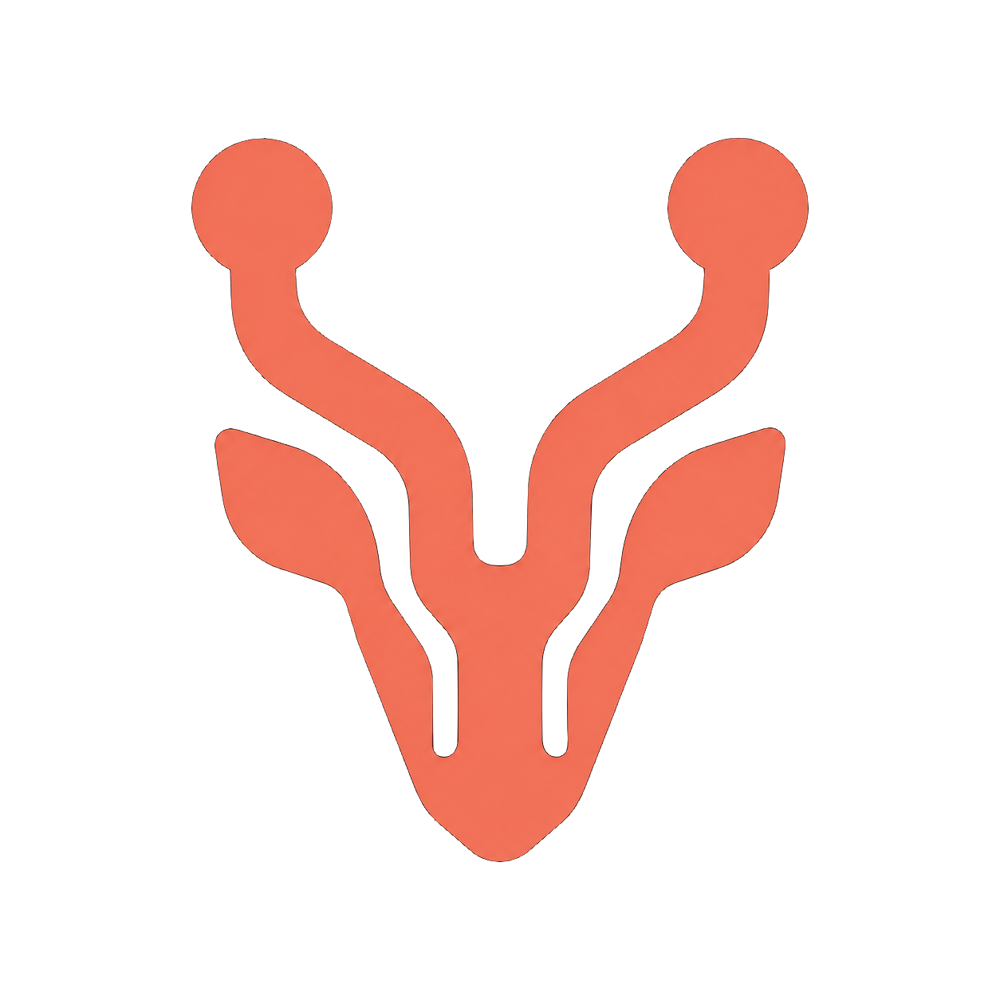

Self-hosting is solved enough.
GitLab, Forgejo, Gitea, OneDev, and others already prove that an open Git forge can run outside GitHub.

forkalopeLandscape / Overview
The field is full of capable forges. The open question is whether one can feel as familiar as GitHub, run anywhere, and still belong to a cloud of operators who can help one another recover.
Researched September 2026
GitLab, Forgejo, Gitea, OneDev, and others already prove that an open Git forge can run outside GitHub.
Mirrors move repository data. They do not automatically make identity, permissions, issues, reviews, routing, and recovery portable.
Make the familiar forge easy to deploy, then make shared operations and recovery part of the product from the start.
A directional read of the projects closest to the thesis.
| Capability | forkalopeproposed network |  Forgejocommunity forge Forgejocommunity forge |
 Gitealightweight forge Gitealightweight forge |
 Radiclepeer-to-peer forge Radiclepeer-to-peer forge |
|||
|---|---|---|---|---|---|---|---|
| Foundation | |||||||
| Open-source software | plan | ✓ | ✓ | ✓ | ✓ | ✓ | ✓ |
| Self-hostable | plan | ✓ | ✓ | ✓ | ✓ | ~ | ✓ |
| GitHub-familiar UI | target | ✓ | ✓ | ✓ | ✓ | ~ | ~ |
| Collaboration surface | |||||||
| Issues + pull / merge requests | target | ✓ | ✓ | ✓ | ✓ | ~ | ~ |
| CI/CD + packages | target | ✓ | ✓ | ✓ | ✓ | ✓ | ~ |
| API + migration tooling | target | ✓ | ✓ | ✓ | ~ | ~ | ~ |
| Network relationship | |||||||
| Replication beyond mirrors | core | ~ | ~ | — | — | — | ✓ |
| Portable identity + social data | core | ~ | ~ | — | — | — | ✓ |
| Mutual recovery network | core | — | ~ | — | — | — | ~ |
Swipe horizontally to compare all platforms
This is a directional comparison, not a product certification. “✓” means the capability is part of a project’s current center of gravity; “plan,” “target,” and “core” describe Forkalope’s proposed direction.
The lesson each project brings to the table.
Forgejo is a community-driven Free Software forge similar to GitHub and a drop-in replacement for Gitea. Its primary federation goal is the clearest proof that an open, familiar forge can also think beyond one server—but Forgejo documents federation as experimental, with moderation and access-control work still unfinished. Read the federation status ↗
Takeaway: make the familiar surface and the network protocol deliberate parts of the same product.Radicle is an open-source, peer-to-peer code collaboration stack built on Git. It gives each node a role in replication, uses cryptographic identities, and stores issues and patches as signed collaborative objects. It is the strongest architectural reference here, while its CLI/local-first workflow is intentionally unlike a drop-in GitHub UI. Visit Radicle ↗
Takeaway: decentralization should improve ownership without making everyday collaboration feel foreign.Gitea is the lightweight, self-hosted all-in-one baseline: code hosting, code review, team collaboration, package registry, and CI/CD in a small service. Its strength is the simple install and familiar UI; its center is still the independently operated instance rather than a shared network. Read the Gitea docs ↗
Takeaway: deployment has to be easy enough that “run your own” is a normal choice.GitLab CE sets the breadth benchmark: repository management, access control, merge requests, issues, wikis, and a large integrated DevOps surface. It is powerful, but its operational weight and open-core split make it a useful contrast for Forkalope’s goal of keeping the complete deployable core understandable. See GitLab CE ↗
Takeaway: “100% the features” also means respecting the cost of running and upgrading them.SourceHut takes a modular, Unix-style approach with Git and Mercurial hosting, mailing lists, patch review, CI, wikis, and a CLI. Its no-tracking, no-JavaScript-friendly posture and export tooling are valuable ownership references, even though its email-first workflow is not the UI everyone already knows. Explore SourceHut ↗
Takeaway: openness is also a product experience, not only a license.OneDev packages Git hosting, issue management, Kanban, packages, and CI/CD into a self-hosted service. Its integrated workflow is close to the “one place for the whole team” expectation, but clustering is an enterprise feature and the platform remains a traditional server deployment. Start with OneDev ↗
Takeaway: a distributed product needs a better answer for operations, not only a distributed slogan.Smaller or more specialized forges that sharpen the comparison.
 GitBucketGitHub API-compatible Scala platform with repositories, issues, pull requests, wiki, and plugins.GitHub-shaped ↗
GitBucketGitHub API-compatible Scala platform with repositories, issues, pull requests, wiki, and plugins.GitHub-shaped ↗
 GogsThe lightweight ancestor: simple, stable, extensible self-hosted Git with issues, pull requests, wiki, and mirroring.Minimal baseline ↗
GogsThe lightweight ancestor: simple, stable, extensible self-hosted Git with issues, pull requests, wiki, and mirroring.Minimal baseline ↗
The opening
Today’s strongest projects tend to optimize for one of these: a complete self-hosted suite, an unusually lightweight forge, or a genuinely distributed protocol. Forkalope can be interesting only if it treats all three as first-class.
The hard part is not putting a GitHub-like page on a cheap server. It is making identity, permissions, issues, reviews, search, packages, actions, backups, moderation, upgrades, and recovery behave coherently across independently operated nodes.
Primary project documentation and repositories used for this first pass.
Scope note: this is a product landscape, not an exhaustive catalog of every Git forge. It prioritizes active, open-source projects with meaningful overlap in UI, self-hosting, collaboration, or distributed ownership. Capabilities and availability change; the links above are the source of truth.